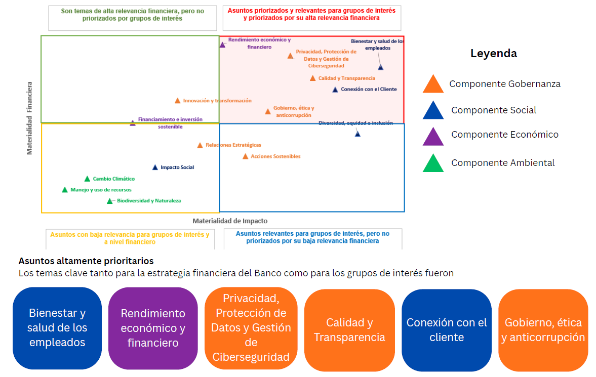

[GRI 3-1, 3-2| NIIF S1 — Estrategia]
Objetivo
Actualizamos el análisis de doble materialidad de Banco Guayaquil, con el fin de identificar y priorizar los asuntos ambientales, sociales, económicos y de gobernanza más relevantes para la estrategia del Banco, sus grupos de interés y su capacidad de generar valor sostenible en el corto, mediano y largo plazo.
Enfoque metodológico
Nuestro análisis consideró dos dimensiones:
| Dimensión | Alcance |
|---|---|
| Materialidad de impacto | Evalúa los efectos positivos y negativos que Banco Guayaquil genera en la economía, las personas, la sociedad y el ambiente a través de sus operaciones, productos, servicios y relaciones de negocio. |
| Materialidad financiera | Evalúa cómo los factores ASG pueden representar riesgos u oportunidades que afecten el desempeño financiero, reputacional, legal, operativo y estratégico del Banco. |
El proceso se desarrolló en seis fases:
| Fase | Descripción |
|---|---|
| 1. Evaluación y análisis de información previa | Revisión de ejercicios anteriores, estrategia corporativa, información sectorial y normativa aplicable. |
| 2. Diálogo con grupos de interés | Consulta a grupos internos y externos mediante encuestas, entrevistas y espacios de diálogo. |
| 3. Identificación de impactos, riesgos y oportunidades | Definición de impactos positivos y negativos, así como riesgos y oportunidades asociados a cada asunto material. |
| 4. Análisis de materialidad de impacto | Priorización de temas según su relevancia para los grupos de interés y su impacto en el entorno. |
| 5. Análisis de materialidad financiera | Evaluación de riesgos y oportunidades considerando probabilidad e impacto reputacional, legal y económico. |
| 6. Integración de resultados | Construcción de la matriz de doble materialidad e interpretación de los asuntos prioritarios. |
Insumos considerados
Para asegurar una visión integral, nuestro análisis incluyó:
| Insumo | Alcance |
|---|---|
| Benchmarking sectorial | Revisión de 18 instituciones bancarias de Ecuador y Latinoamérica. |
| Benchmarking normativo | Consideración de GRI, SASB, NIIF S1 y S2, Principios de Ecuador, normas de bonos verdes, normativa local y lineamientos de la Superintendencia de Bancos. |
| Ejercicios previos de materialidad | Revisión de los análisis de materialidad realizados por el Banco en años anteriores. |
| Consulta a grupos de interés | Participación de grupos internos y externos clave. |
| Evaluación interna | Participación de áreas de gobierno corporativo, riesgos, finanzas y estrategia. |
Grupos de interés consultados
El proceso incorporó la participación de de 556 personas, distribuidas en los siguientes grupos:
| Grupo de interés | Participantes |
|---|---|
| Alta Administración | 5 |
| Clientes | 73 |
| Accionistas e inversionistas | 8 |
| Colaboradores | 211 |
| Proveedores | 99 |
| Banqueros del Barrio | 133 |
| Autoridades / reguladores | 1 |
| Academia | 5 |
| Medios de comunicación | 5 |
| Fondeadores | 3 |
| Asociaciones / gremios | 6 |
| ONG | 7 |
| Total | 556 |
Asuntos materiales priorizados
Como resultado de nuestro proceso de análisis, definimos 15 asuntos materiales:
| Componente | Asuntos materiales |
|---|---|
| Gobernanza | Acciones sostenibles; calidad y transparencia; gobierno, ética y anticorrupción; innovación y transformación; privacidad, protección de datos y gestión de ciberseguridad; relaciones estratégicas. |
| Social | Bienestar y salud de los empleados; diversidad, equidad e inclusión; conexión con el cliente; impacto social. |
| Económico | Financiamiento e inversión sostenible; rendimiento económico y financiero. |
| Ambiental | Biodiversidad y naturaleza; cambio climático; manejo y uso de recursos. |
Resultados de la matriz de doble materialidad
| Categoría | Asuntos identificados | Implicación estratégica |
|---|---|---|
| Asuntos altamente prioritarios | Rendimiento económico y financiero; privacidad, protección de datos y gestión de ciberseguridad; bienestar y salud de los empleados; calidad y transparencia; gobierno, ética y anticorrupción; conexión con el cliente. | Requieren gestión prioritaria por su alta relevancia financiera y alta importancia para los grupos de interés. |
| Alta relevancia financiera, menor prioridad relativa para grupos de interés | Financiamiento e inversión sostenible; innovación y transformación. | Requieren fortalecer su gestión estratégica y comunicación para visibilizar su contribución al valor sostenible. |
| Alta relevancia para grupos de interés, menor impacto financiero inmediato | Diversidad, equidad e inclusión; acciones sostenibles. | Son relevantes para la legitimidad, reputación, cultura organizacional y relación con grupos de interés. |
| Asuntos de monitoreo permanente | Biodiversidad y naturaleza; manejo y uso de recursos; cambio climático; impacto social; relaciones estratégicas. | Aunque presentan menor criticidad actual, pueden ganar relevancia por cambios regulatorios, expectativas del mercado o evolución de riesgos ASG. |

Uso de los resultados
Los resultados del análisis de doble materialidad nos sirven como insumo para:
| Aplicación | Contribución |
|---|---|
| Estrategia de sostenibilidad | Alinea los asuntos prioritarios con los pilares estratégicos del Banco. |
| Gestión de riesgos y oportunidades | Permite anticipar riesgos ASG y capturar oportunidades de negocio sostenible. |
| Reporte integrado | Fortalece la transparencia y la trazabilidad de la información divulgada. |
| Relación con grupos de interés | Refuerza la escucha activa y la respuesta a expectativas relevantes. |
| Toma de decisiones | Orienta la asignación de recursos, métricas, iniciativas y planes de acción. |
Conclusión
Nuestro análisis de doble materialidad confirma que la sostenibilidad es un eje transversal para la creación de valor de Banco Guayaquil. Al integrar la visión financiera con la perspectiva de impacto, el Banco fortalece su capacidad para gestionar riesgos, responder a las expectativas de sus grupos de interés y avanzar hacia una estrategia más resiliente, transparente y alineada con estándares internacionales.